Peut-on donner un prix au futur ? L’économie du changement climatique
CM 10 · Ouverture
ATER en économie, Université Clermont Auvergne
Fait de départ : France Stratégie relève la valeur du carbone (2025)
- En mars 2025, une commission d’experts réunie par France Stratégie fixe la « valeur de l’action pour le climat » à 256 € par tonne d’équivalent CO₂ évitée en 2025 (en euros de 2023), contre 187 € auparavant, et à 300 € en 2030.
- Conséquence : ce prix trie les projets. Une action qui évite une tonne pour moins de 256 € est jugée rentable pour la collectivité.
- Le calcul repose sur un taux d’actualisation de 3,2 % par an.
Sources : L’info durable, 20/03/2025 ; OFCE, blog, 18/11/2025.
Le second fait : à Bakou, le Nord s’engage à financer le Sud
- À la COP29 de Bakou, les pays développés s’engagent à fournir « au moins 300 milliards de dollars par an d’ici 2035 » aux pays en développement, au lieu de 100 milliards.
- Suite : la COP30 de Belém appelle à « au moins tripler » l’aide à l’adaptation d’ici 2035.
- La COP31 se tient à Antalya, en Turquie, du 9 au 20 novembre 2026.
Sources : AFP, Connaissance des Énergies, 24/11/2024 ; Connaissance des Énergies, mis à jour le 17/03/2026 ; UNRIC, 02/03/2026.
Deux faits à expliquer et la question de la séance
- Une tonne de CO₂ émise aujourd’hui fera des dégâts pendant des décennies. Pourtant on lui donne un prix aujourd’hui, et ce prix dépend d’un simple taux.
- Les pays qui ont le plus émis ne sont pas ceux qui subissent le plus, ni ceux qui émettent le plus aujourd’hui.
Question de la séance : peut-on donner un prix au futur, et qui doit payer, du Nord ou du Sud ?
Rappel : prix, externalité, taux, croissance, positif et normatif
- Prix : ce qu’il faut céder pour obtenir une unité d’un bien ; il signale la rareté.
- Externalité : une activité impose aux autres un dommage qu’elle ne paie pas : Cms = Cm + Dm, où Dm est le dommage marginal. Sans correction, le marché va trop loin.
- Taux réel : r ≈ i − π, le taux nominal corrigé de l’inflation.
- Croissance g : variation, en % par an, du PIB ou du revenu par habitant.
- Positif : ce qui est, vérifiable ; normatif : ce qui devrait être, selon un jugement de valeur.
Actualiser : ramener un montant futur à sa valeur d’aujourd’hui
Un dommage climatique arrive tard : la tonne de CO₂ émise en 2027 pèsera sur des récoltes et des côtes en 2060 ou en 2120. Il faut une règle de conversion entre les dates.
Définition 1 (Actualisation) Actualiser, c’est convertir un montant futur en sa valeur d’aujourd’hui. C’est l’opération inverse du placement : 100 € placés à 5 % deviennent 105 € dans un an ; donc 105 € dans un an valent 100 € aujourd’hui.
Taux d’actualisation δ : le poids donné au futur
Définition 2 (Taux d’actualisation) Le taux d’actualisation (δ) est le taux, en % par an, auquel on réduit la valeur d’un montant pour chaque année qui le sépare d’aujourd’hui. Plus δ est élevé, moins le futur pèse dans la décision.
- La question « peut-on donner un prix au futur ? » devient alors : quel taux choisir ?
- Trois économistes y ont répondu différemment : Ramsey, Nordhaus, Stern.
Valeur actuelle et facteur d’actualisation : la formule
Définition 3 (Valeur actuelle) La valeur actuelle d’un montant reçu (ou d’un dommage subi) dans n années est : \[\text{valeur actuelle} = \dfrac{\text{montant}}{(1 + \delta)^n}\] Le facteur 1 ÷ (1 + δ)n s’appelle le facteur d’actualisation. Il est compris entre 0 et 1.
Avec la définition précédente : n = 1, δ = 5 %, 105 ÷ 1,05 = 100 €.
Ramsey (1928) : épargner pour ses descendants
Frank Ramsey (1928), « A Mathematical Theory of Saving », The Economic Journal · école néoclassique (Cambridge). Ramsey cherche combien une nation doit épargner pour ses descendants. L’épargne optimale dépend de la richesse que l’épargne elle-même procurera aux générations suivantes.
- L’impatience pure est la préférence pour le présent seulement parce qu’il est le présent.
- Ramsey la juge injustifiable : une pratique « éthiquement indéfendable », qui « vient seulement d’une faiblesse de l’imagination » (1928, p. 543 ; notre traduction).
Règle de Ramsey : impatience pure plus un terme lié à la croissance
\[\delta = \text{impatience pure} + \text{aversion à l'inégalité} \times g\]
- Premier terme : l’impatience pure.
- Second terme, la croissance g : si nos petits-enfants sont plus riches, un euro de plus compte moins pour eux que pour nous, comme 100 € comptent moins pour un ménage aisé que pour un ménage modeste.
- Aversion à l’inégalité : à 0, un euro vaut un euro pour tous ; à 2, on donne beaucoup de poids au plus pauvre.
Nordhaus (1992) : le taux se lit dans les rendements du capital
 2018 · Bengt Nyman, CC BY 2.0, Wikimedia Commons
2018 · Bengt Nyman, CC BY 2.0, Wikimedia Commons
William Nordhaus (1992), Science · école néoclassique. Premier modèle DICE : les émissions réchauffent la planète, le réchauffement détruit une part de la production. Avec un taux proche des rendements du capital, la politique optimale réduit les émissions progressivement.
Le taux est proche du taux d’intérêt réel r. Rendement réel avant impôt du capital des entreprises américaines : « d’environ 7 % par an » pendant quarante ans (Nordhaus, Yale, 2007 ; notre traduction).
Stern (2006) : le choix du taux est d’abord éthique
 2015 · Royal Society, CC BY-SA 4.0, Wikimedia Commons
2015 · Royal Society, CC BY-SA 4.0, Wikimedia Commons
Nicholas Stern (2006), The Stern Review · économie publique. Rien ne justifie de compter moins le bien-être d’une personne parce qu’elle naîtra plus tard. Avec un taux faible, agir tôt et fort coûte moins cher que laisser faire.
- Impatience pure presque nulle : taux réel d’équilibre de 1,4 % par an (selon Nordhaus, 2007).
- Sans action : « au moins 5 % du PIB mondial chaque année, maintenant et pour toujours » (cité par Nordhaus, 2007 ; notre traduction).
Coût social du carbone : le dommage marginal Dm actualisé
Émettre une tonne de CO₂ impose aux autres, et surtout aux générations futures, un dommage qu’on ne paie pas.
Définition 4 (Coût social du carbone) Le coût social du carbone est la valeur actuelle de tous les dommages futurs causés par une tonne de CO₂ émise aujourd’hui. C’est le dommage marginal Dm de l’externalité climatique. Il dépend donc du taux δ.
Valeur de l’action pour le climat : un prix d’objectif
Définition 5 (Valeur de l’action pour le climat) La valeur de l’action pour le climat (VAC) est le prix d’une tonne de CO₂ évitée que retient l’État français pour évaluer les projets. Elle ne mesure pas les dommages : c’est le prix qui permet d’atteindre un objectif d’émissions donné (la trajectoire de la stratégie nationale bas-carbone, qui vise la neutralité en 2050) au moindre coût. Elle augmente chaque année au rythme du taux d’actualisation.
Source : OFCE, 18/11/2025.
De l’émission au tri des projets : où le taux δ intervient
| Étape | Où δ intervient |
|---|---|
| 1. Émission, 2. dommages futurs | non |
| 3. Actualisation des dommages | oui : δ faible, dommages lourds |
| 4a. Coût social du carbone (dommages) | résultat sensible à δ |
| 4b. VAC (objectif d’émissions) | croît au rythme de δ |
| 5. Tri des projets | oui : coûts et tonnes évitées actualisés |
Le taux agit à presque toutes les étapes de calcul, et il en déplace le résultat.
Valeur actuelle (1/3) : à 1 %, le futur pèse encore
- Abscisse : dans combien d’années on reçoit 1 000 € (ou on subit 1 000 € de dommages).
- Ordonnée : leur valeur actuelle.
- À δ = 1 %, 1 000 € dans un siècle valent encore 370 € aujourd’hui.
Valeur actuelle (2/3) : à 3 %, 1 000 € dans un siècle valent 52 €
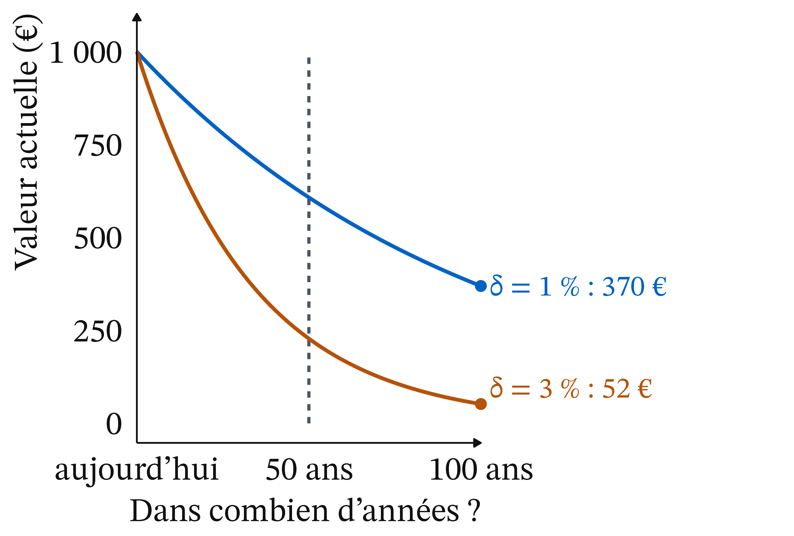
- À 3 %, la courbe descend beaucoup plus vite.
- À 100 ans : 52 €, contre 370 € à 1 %.
- Les deux courbes partent du même point et s’écartent de plus en plus avec l’horizon.
Valeur actuelle (3/3) : à 5 %, les mêmes 1 000 € valent 8 €

- À 5 % : 8 € dans un siècle.
- L’écart entre 1 % et 5 % paraît faible sur une année ; sur un siècle, il multiplie la valeur actuelle par près de 50.
- Effet des intérêts composés : on réduit chaque année une somme déjà réduite.
Exemple chiffré : actualiser à la main sur deux ans
- Placer. 100 € placés à 10 % deviennent 100 × 1,1 = 110 € dans un an, puis 110 × 1,1 = 121 € dans deux ans.
- Actualiser, à l’envers. 121 € reçus dans deux ans valent 121 ÷ 1,1 ÷ 1,1 = 100 € aujourd’hui, au taux de 10 %.
- La règle de 70. Un montant actualisé à δ % par an est divisé par deux environ tous les 70 ÷ δ ans. C’est une approximation.
Règle de 70 : diviser par deux tous les 70 ÷ δ ans
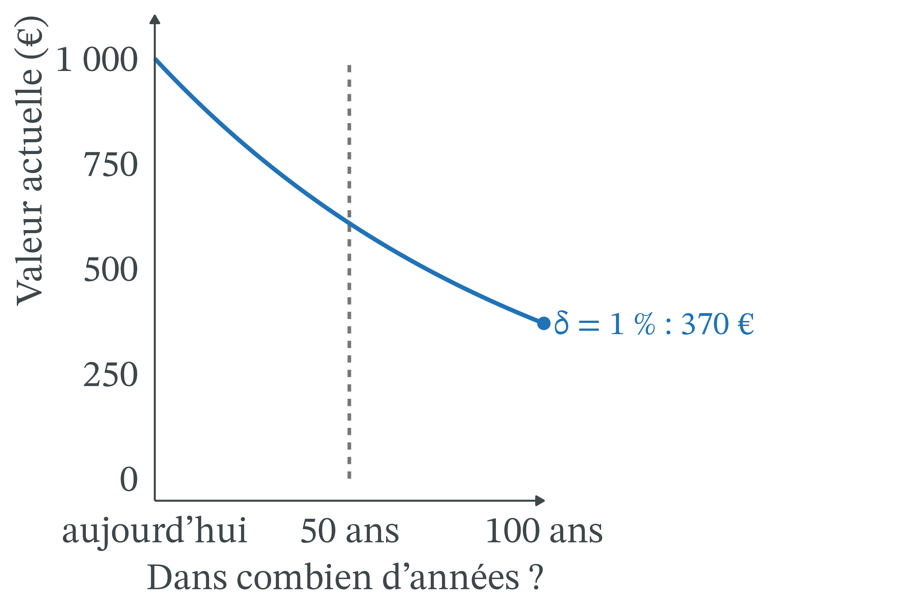
- À 7 % : division par deux tous les 10 ans ; 1 000 → 500 → 250 → … → environ 1 €.
- À 1 % : tous les 70 ans ; 1 000 € dans 70 ans valent environ 500 €.
- Taux multiplié par 7, valeur divisée par environ 300.
Facteurs d’actualisation : multiplier le montant futur suffit
| Horizon | δ = 1 % | δ = 3 % | δ = 5 % |
|---|---|---|---|
| 50 ans | 0,61 | 0,23 | 0,09 |
| 100 ans | 0,370 | 0,052 | 0,008 |
- Le tableau donne les facteurs, calculés une fois pour toutes.
- Valeur actuelle = montant futur × facteur. Exemple : 1 000 € dans 50 ans à 3 % valent 1 000 × 0,23 = 230 €.
Exemple chiffré : payer 100 aujourd’hui pour éviter 1 000 dans cent ans
Un pays peut dépenser 100 millions d’euros aujourd’hui (une digue, une centrale moins émettrice) pour éviter 1 000 millions d’euros de dommages dans 100 ans. Les chiffres sont fictifs.
- La règle de décision. On compare le coût d’aujourd’hui (100) à la valeur actuelle du dommage évité. Si elle dépasse 100, le projet vaut son coût.
- À 1 %. 1 000 × 0,370 = 370. C’est plus que 100 : on construit.
Le même projet est refusé à 3 % et à 5 %
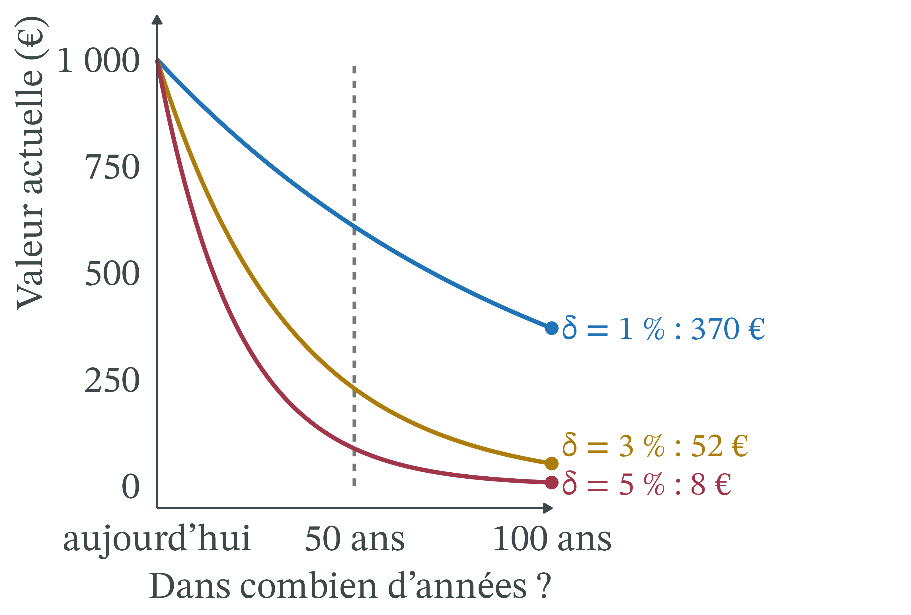
- À 3 %. 1 000 × 0,052 = 52. C’est moins que 100 : on ne construit pas.
- À 5 %. 1 000 × 0,008 = 8. Le projet paraît absurde.
Seuil de décision : le projet bascule vers 2,3 %
- Le seuil. Le projet vaut son coût tant que le facteur dépasse 100 ÷ 1 000 = 0,1.
- De 1 000 à 100 : un peu plus de trois divisions par deux (1 000 → 500 → 250 → 125 → 100).
- Une tous les 30 ans environ : 70 ÷ 30 ≈ 2,3 %. Au-dessus, on ne construit pas.
- La leçon. Mêmes ingénieurs, mêmes climatologues, même dommage. Seul le taux change, et il retourne la décision.
Point d’attention : actualiser n’ignore pas les générations futures
« Actualiser, c’est dire que les générations futures ne comptent pas. » Pas forcément.
- Avec une impatience nulle, on actualise encore si l’on pense que le futur sera plus riche (règle de Ramsey).
- Un taux élevé peut se défendre au nom des générations futures : placer l’argent ailleurs à 7 % leur laisserait davantage, si on le leur transmet vraiment.
- Le désaccord porte sur la valeur du taux, pas sur le principe d’actualiser.
Règle de Ramsey : deux réglages donnent 1,4 % et 5,5 %
- Réglage « à la Stern » : impatience 0,1 %, aversion à l’inégalité 1, croissance 1,3 % : δ = 0,1 + 1 × 1,3 = 1,4 %.
- Réglage « à la Nordhaus » : impatience 1,5 %, aversion à l’inégalité 2, croissance 2 % : δ = 1,5 + 2 × 2 = 5,5 %.
- L’essentiel de l’écart vient du second terme : croissance attendue et aversion à l’inégalité.
Paramètres d’illustration : seuls le 1,4 % de Stern et l’impatience de 1,5 % du modèle DICE-2007 viennent de Nordhaus (2007).
Optimum d’émissions (1/3) : sans politique, on émet jusqu’en Q*
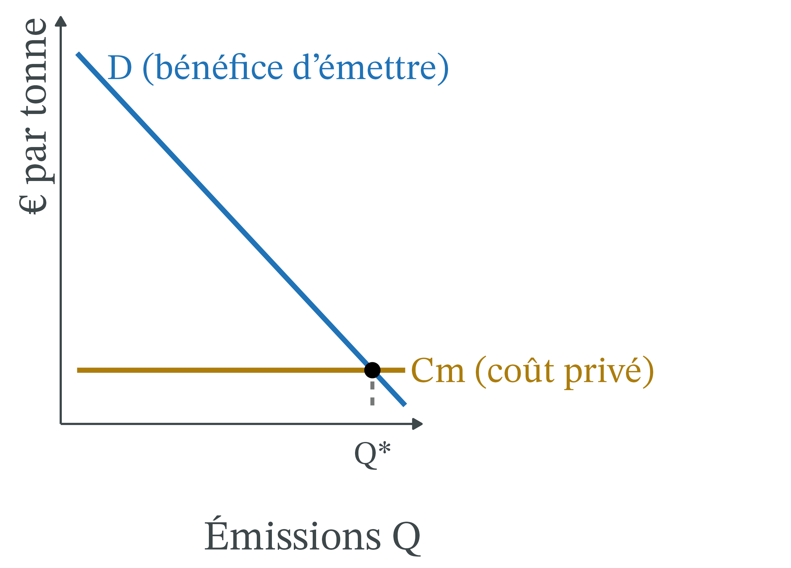
- En abscisse, les émissions Q.
- D mesure ce que rapporte une tonne de plus à celui qui émet (produire, chauffer, rouler).
- Le coût privé Cm est faible.
- Chacun émet jusqu’en Q*, où une tonne de plus ne rapporte plus que son coût privé.
Optimum d’émissions (2/3) : avec un taux élevé, Cms reste bas
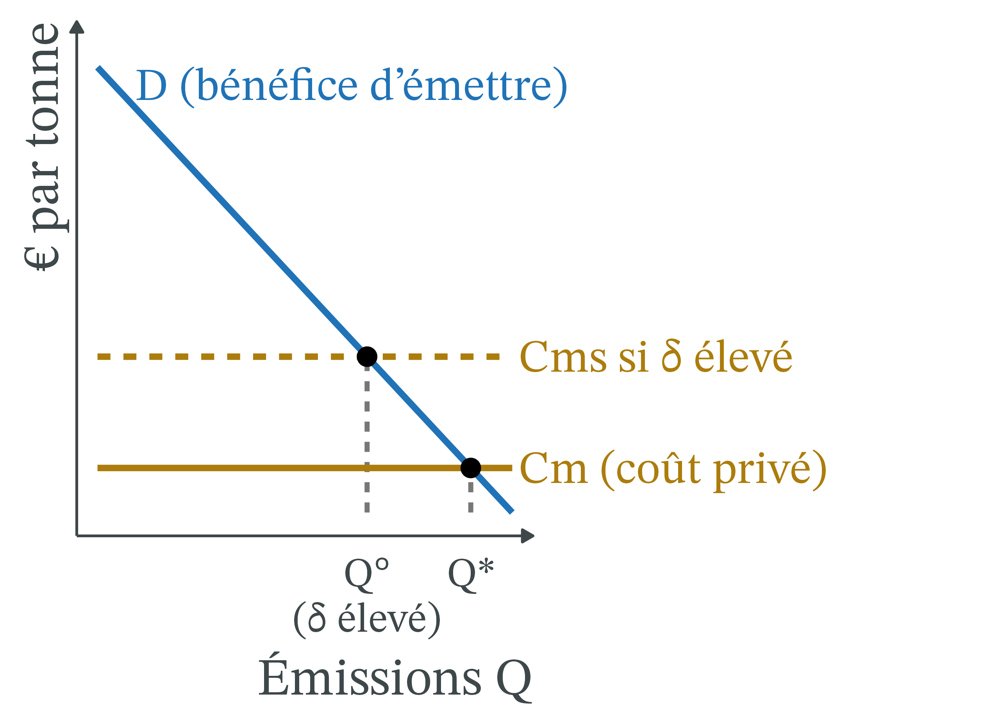
- Le coût marginal social ajoute le coût social du carbone : Cms = Cm + Dm. Or Dm dépend du taux.
- Taux élevé : les dommages futurs s’effacent ; Cms est plus bas, l’optimum Q° est proche de Q*. On réduit, mais moins et plus tard.
Optimum d’émissions (3/3) : avec un taux faible, Q° est bas
![Graphique avec les émissions en abscisse et des euros par tonne en ordonnée. Une droite bleue décroissante représente le bénéfice d'émettre D. Une droite horizontale ambre basse représente le coût privé Cm ; elle coupe D au point Q étoile, à droite. Deux droites horizontales ambre en tirets, plus hautes, représentent le coût marginal social : la plus basse, si le taux d'actualisation est élevé, coupe D en un optimum Q rond au milieu ; la plus haute, si le taux est faible, coupe D en un optimum Q rond à gauche.](cm10_files/figure-revealjs/unnamed-chunk-9-1.png)
- Taux faible : les dommages futurs restent lourds en valeur actuelle.
- Cms est haut, l’optimum Q° est bas.
- Il faut réduire fortement et vite.
- Lecture : Q° (δ faible) < Q° (δ élevé) < Q*.
Taxe carbone optimale de Nordhaus : 30 $ ou 300 $
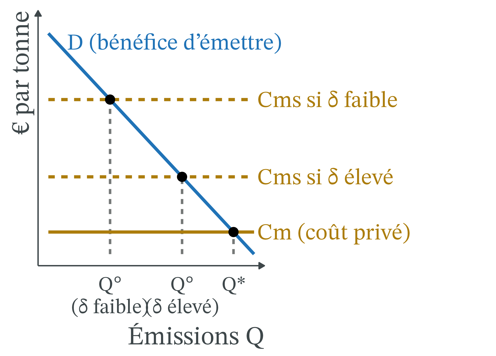
- Taxe optimale pour 2010 dans DICE : environ 30 $ par tonne de carbone.
- Avec les paramètres éthiques de Stern : environ 300 $.
- Soit environ 8 $ et 80 $ par tonne de CO₂.
Source : Nordhaus, conférence de Yale, 2007.
Exemple chiffré : la VAC atteint 300 € en 2030
La VAC vaut 256 € par tonne de CO₂ en 2025 (en euros de 2023) et croît au rythme du taux d’actualisation public, 3,2 % par an.
- Un an plus tard. 256 × 1,032 ≈ 264 € : la VAC 2026 est d’environ 264 €.
- Cinq ans plus tard. On multiplie cinq fois par 1,032, soit par 1,17 environ : 256 × 1,17 ≈ 300 € en 2030.
Sources : OFCE, 18/11/2025 ; L’info durable, 20/03/2025.
Pourquoi la VAC monte au rythme du taux d’actualisation
- Éviter une tonne en 2030 ou en 2025 compte autant pour l’objectif de 2050.
- En valeur actuelle, les deux tonnes doivent donc avoir le même prix : 300 € en 2030, actualisés à 3,2 %, valent bien 256 € en 2025.
- Sinon, il vaudrait mieux tout faire à la date où c’est le moins cher.
On retrouve l’outil de la séance : actualiser, c’est comparer des montants à des dates différentes.
Tri des projets : la pompe à chaleur passe, le biométhane non
- Une pompe à chaleur évite une tonne pour environ 125 € : moins que 256 €, elle est rentable pour la collectivité.
- Le biométhane coûte environ 393 € la tonne évitée : au seul regard du carbone, il ne l’est pas.
- La VAC « ne doit pas être confondue avec un niveau souhaitable ou optimal de taxe carbone » : elle guide le calcul des projets, elle ne fixe pas un impôt.
Source : France Stratégie, cité par L’info durable, 20/03/2025.
Entre générations, un taux élevé ménage le présent
- Taux élevé : on réduit plus tard, quand on sera plus riche et que les techniques auront progressé.
- La génération actuelle y gagne ; celle qui subira le réchauffement y perd, sauf si on lui transmet en échange plus de capital (usines, routes, savoirs).
- Taux faible : un effort tôt, au profit de générations qui seront, si la croissance continue, plus riches que nous.
CO₂ cumulé depuis 1750 : États-Unis et UE en tête
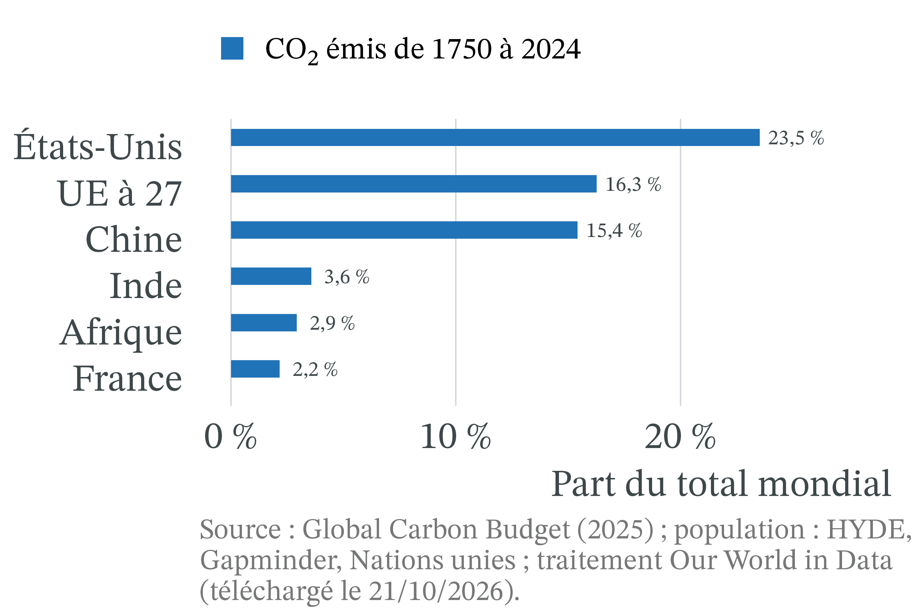
- Le CO₂ s’accumule : ce qui réchauffe aujourd’hui, c’est le stock émis depuis deux siècles.
- Sur 1 849 milliards de tonnes émises de 1750 à 2024 : États-Unis 23,5 %, UE à 27 16,3 %, Chine 15,4 %.
Parts du CO₂ cumulé et de la population : un écart Nord-Sud

- États-Unis et UE à 27 : près de 40 % du CO₂ cumulé avec moins de 10 % de la population mondiale.
- États-Unis : 23,5 % avec 4,2 %.
- Afrique : 2,9 % avec 18,3 %.
Le stock de CO₂ monte tant que les émissions dépassent les puits
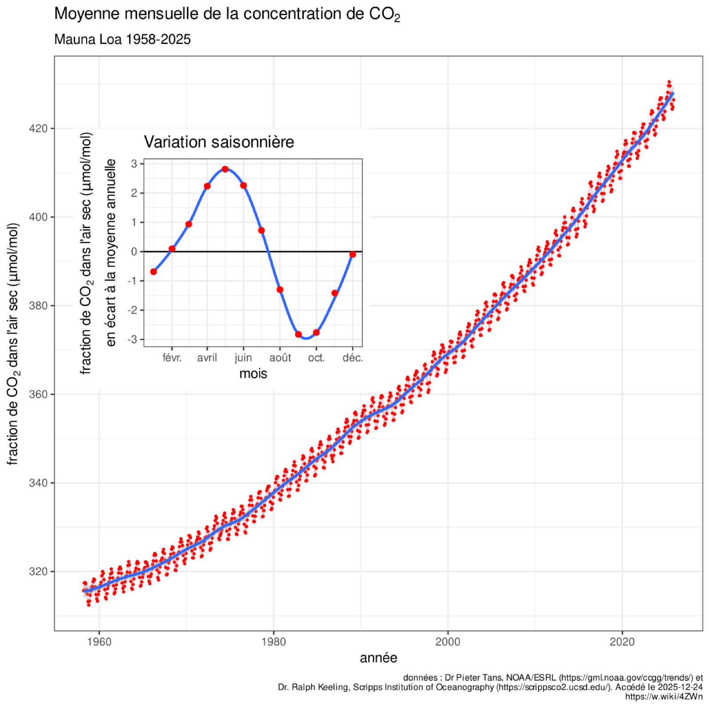
- Mauna Loa : environ 316 µmol/mol en 1958, 427 en 2025.
- De 2015 à 2024, les puits ont absorbé environ la moitié des émissions : 29 % les océans, 21 % les terres.
- Ce stock cause les dommages futurs que le taux pèse.
Graphique : Oeneis, d’après P. Tans (NOAA/ESRL) et R. Keeling (Scripps), CC BY-SA 4.0, Wikimedia Commons ; Global Carbon Budget 2025, ESSD, 13/05/2026.
Budget carbone : 40 à 50 % du CO₂ émis reste dans l’atmosphère
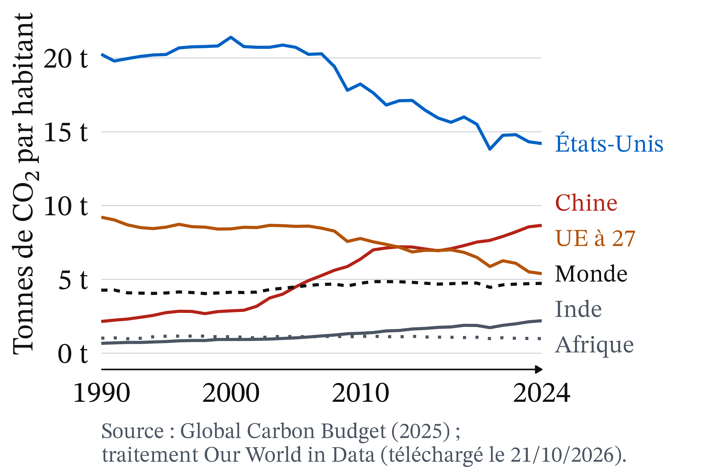
- Émissions mondiales de CO₂ : de 21 à 41 milliards de tonnes par an en moyenne, de 1965-1974 à 2015-2024.
- À chaque décennie, 40 à 50 % de ce CO₂ reste dans l’atmosphère.
- Plus le flux est grand, plus le stock monte vite.
Source : Global Carbon Project, Global Carbon Budget 2025, données v1.0, ICOS (consulté le 22/10/2026).
Par habitant, la Chine dépasse l’UE chaque année depuis 2017
![Six courbes de 1990 à 2024. La courbe bleue des États-Unis, la plus haute, part d'environ 20 tonnes par habitant, reste autour de 20 tonnes jusqu'en 2007 puis baisse jusqu'à 14,2 tonnes. La courbe ambre de l'Union européenne à 27 baisse de 9,2 à 5,4 tonnes. La courbe rouge de la Chine monte de 2,2 à 8,7 tonnes et passe au-dessus de l'Union européenne vers 2013, durablement depuis 2017. La moyenne mondiale, en tirets noirs, reste entre 4 et 5 tonnes. L'Inde, en gris, monte de 0,7 à 2,2 tonnes ; l'Afrique, en pointillés gris, reste autour d'une tonne.](cm10_files/figure-revealjs/unnamed-chunk-14-1.png)
- De 1990 à 2024 : environ −30 % aux États-Unis, plus de −40 % dans l’UE.
- Chine : de 2,2 t à 8,7 t, multipliée par 4.
- Afrique : autour d’une tonne sur toute la période.
Empreinte carbone : la France émet aussi par ses importations
- Empreinte carbone de la France (tous gaz à effet de serre, importations comprises) : ce que consomment les Français, où que ce soit produit.
- Émissions des résidents : seulement ce qu’émettent les acteurs installés en France.
- L’écart, ce sont les émissions des pays qui produisent ce que la France importe.
- Ces chiffres ne se comparent pas aux 4,0 tonnes de CO₂ d’un Français en 2024 (CO₂ seul, sans les importations).
Empreinte carbone : 8,3 t par Français en 2025, contre 5,8 t émises
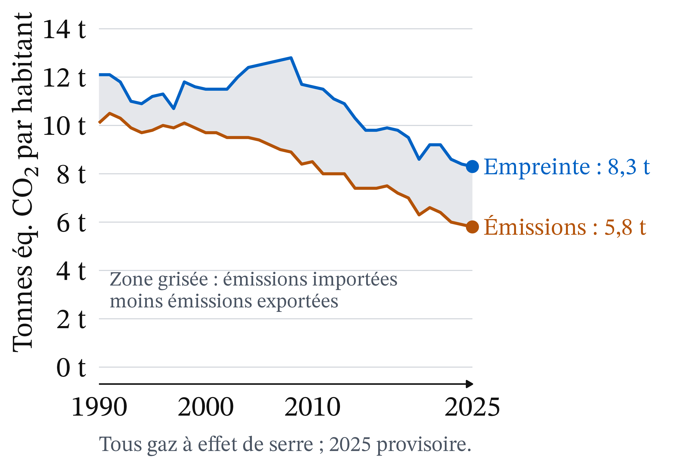
- Série révisée, tous gaz, 2025 : empreinte 8,3 t par habitant, émissions des résidents 5,8 t.
- Les deux baissent depuis 1990 ; l’écart est encore de 2,5 t.
- Les émissions importées font environ la moitié de l’empreinte (296 Mt sur 571).
Source : Insee et SDES, Insee Première n° 2130, 13/10/2026 (consulté le 22/10/2026).
Entre pays, la règle de Ramsey joue en sens inverse
- Le second terme de la règle de Ramsey dit qu’un euro compte plus pour un plus pauvre.
- S’il justifie de compter moins nos descendants plus riches, il justifie aussi de compter plus un agriculteur sahélien qu’un cadre parisien.
- Le même raisonnement qui réduit l’effort entre générations l’augmente entre pays.
CCNUCC (1992) : responsabilité et capacité à payer
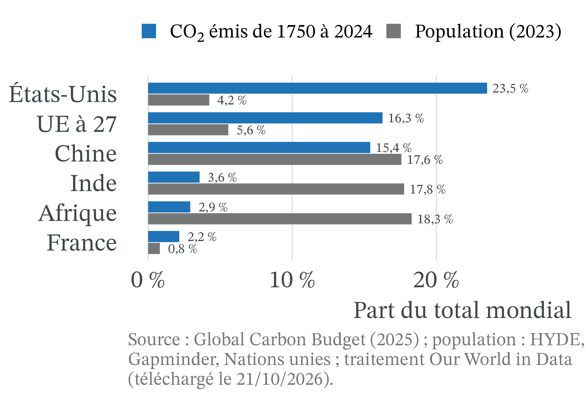
- Les pays agissent « en fonction de leurs responsabilités communes mais différenciées et de leurs capacités respectives » (art. 3.1).
- Deux critères : la responsabilité (le stock émis) et la capacité à payer (le revenu).
Les négociations traduisent le débat en milliards de dollars
- Bakou : 300 milliards de dollars par an d’ici 2035, pour la transition énergétique et l’adaptation des pays en développement.
- La Chine a refusé de figurer parmi les contributeurs obligés : les contributions des pays non « développés » restent volontaires.
- Belém : l’aide à l’adaptation devrait passer d’environ 40 à 120 milliards par an d’ici 2035 ; l’enveloppe de 300 milliards n’a pas été relevée.
Sources : AFP, Connaissance des Énergies, 24/11/2024 ; Connaissance des Énergies, mis à jour le 17/03/2026.
Financement climat : 100 milliards de dollars atteints seulement en 2022
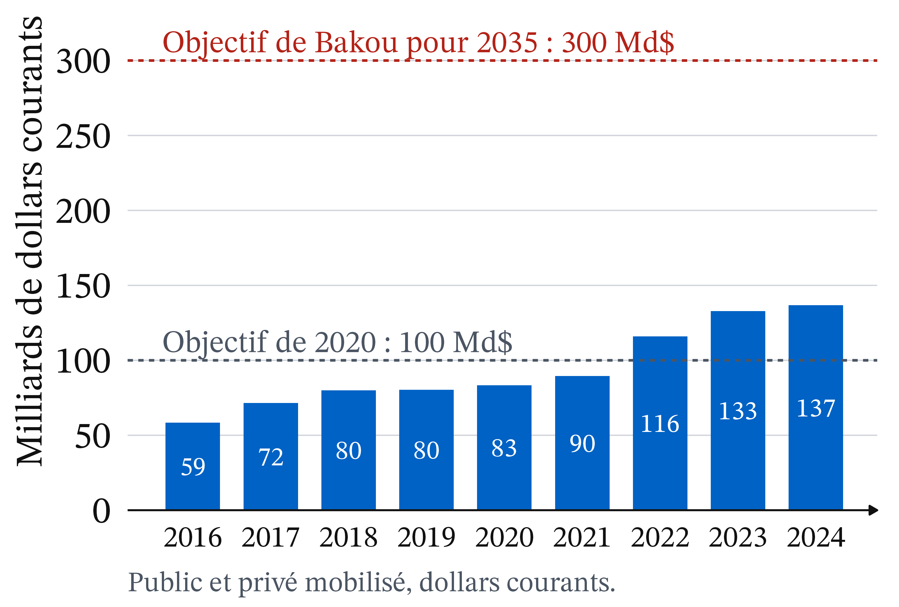
- L’objectif de 100 milliards par an, fixé pour 2020, n’est dépassé qu’en 2022 (115,9 milliards).
- En 2024 : 136,7 milliards.
- Pour 300 milliards en 2035, il faudrait multiplier ce montant par 2,2 environ (dollars courants).
Source : OCDE, Climate Finance Provided and Mobilised by Developed Countries in 2013-2024, 21/05/2026, tableau 1 (consulté le 22/10/2026).
Controverse : un désaccord qui n’est pas seulement technique
Analyse positive (ce qui est : mécanismes et effets, vérifiables)
- Le résultat d’une évaluation climatique dépend d’abord du taux, puis de la fonction de dommages.
Analyse normative (ce qui devrait être : dépend de jugements de valeur)
- Faut-il une impatience pure ? Ramsey et Stern disent non ; d’autres invoquent les choix réels des épargnants.
- Quel poids donner à l’égalité, entre générations et entre pays ?
- Le rendement du capital comme repère, si l’argent épargné n’est pas investi pour les générations futures ?
Analyse positive : « presque toute la différence » vient de l’actualisation
- Pour Nordhaus, « presque toute la différence » entre le rapport Stern et les autres études vient de l’actualisation.
- Scénario le plus pessimiste de Stern : des pertes inférieures à 1 % de la production mondiale en 2050, d’environ 3 % en 2100. Actualisées à un taux très faible, elles deviennent une perte « maintenant » de 14 %.
- Coût social du carbone chez Nordhaus : 50 à 235 $ par tonne de carbone (14 à 64 $ par tonne de CO₂), à 5 % ou à 2,5 %.
Sources : Nordhaus, conférence de Yale, 2007 (notre traduction) ; The Conversation, 12/11/2018.
Analyse positive : la fonction de dommages déplace aussi Cms

- La fonction de dommages traduit un réchauffement en perte de production.
- Chez Nordhaus, 6 °C ne détruiraient que 10 % du PIB mondial.
- Plus cette perte est forte, plus Dm est haut, quel que soit le taux.
Source : The Conversation, 12/11/2018.
Positions : Nordhaus lit le taux, Stern le choisit, d’autres contestent
- Nordhaus, approche « descriptive » : le taux se lit dans les rendements du marché ; un taux trop bas sacrifierait des investissements plus utiles (éducation, santé). Prix du carbone qui monte progressivement.
- Stern, approche « prescriptive » : un choix éthique, qu’aucun marché ne révèle. Réductions fortes et immédiates.
- Critiques du calcul (AFD, Pindyck) : « l’apparence de certitude » ; partir de la réalité physique, comme la VAC.
Sources : The Conversation, 12/11/2018 ; OFCE, 18/11/2025.
Le Conseil constitutionnel protège générations futures et autres peuples
Décision n° 2023-1066 QPC du 27 octobre 2023 (Cigéo) : le législateur doit veiller à ce que « les choix destinés à répondre aux besoins du présent ne compromettent pas la capacité des générations futures et des autres peuples à satisfaire leurs propres besoins ».
- Le texte vise les deux questions de la séance : les générations futures et les autres peuples.
- La loi a été jugée conforme : le juge contrôle le principe, il ne fixe pas de taux d’actualisation.
À retenir
- Actualiser : valeur actuelle = montant ÷ (1 + δ)n.
- Sur un siècle, 1 000 € valent 370 € à 1 % et 8 € à 5 %.
- Règle de Ramsey : impatience pure + aversion à l’inégalité × croissance.
- Taux plus faible : coût social du carbone plus élevé, optimum d’émissions plus bas.
- États-Unis et UE : près de 40 % du CO₂ cumulé, moins de 10 % de la population.
- Le taux mêle des faits et un jugement de valeur.
Plan de dissertation : ce que dit l’outil, ce qu’il ne tranche pas
Sujet : peut-on donner un prix au futur, et qui doit payer, du Nord ou du Sud ?
I. Ce que dit l’outil (positif)
- A. L’actualisation donne un prix au futur ; le taux δ décide du résultat.
- B. Le stock émis et le revenu situent la responsabilité et la capacité de chaque pays.
II. Ce qu’il ne tranche pas (normatif)
- A. Le poids des générations futures : taux « descriptif » ou « prescriptif ».
- B. Le poids des pays les plus pauvres : le même argument joue entre pays.
CM 10 · Climat